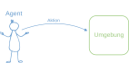
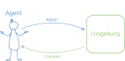
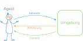
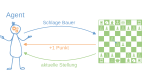
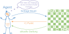
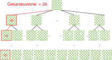
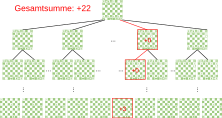
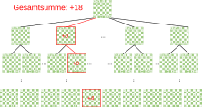
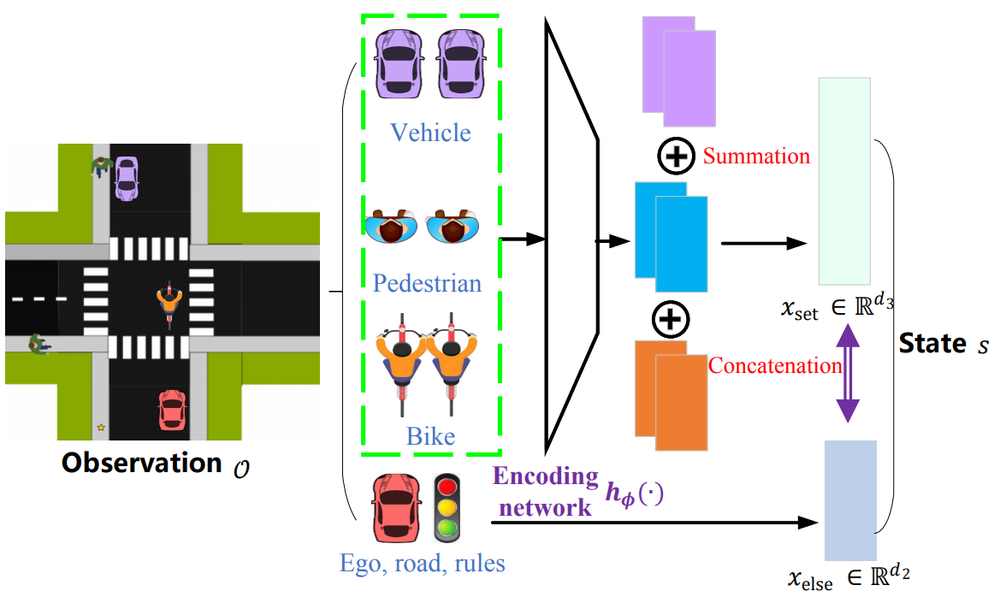
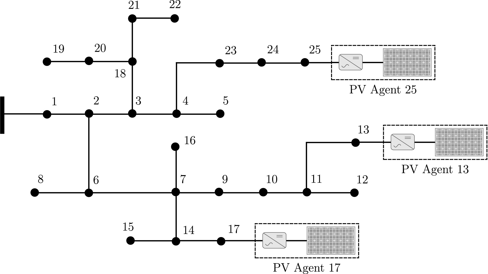

Vorlesung 3: bestärkendes Lernen
(reinforcement learning)
(reinforcement learning)


Typen von maschinellem Lernen
Bis jetzt:
- Überwachtes Lernen (supervised learning): Lernen aus Beispielen (Paare von Merkmalen und Klassen bzw. Zielwerten), Erkennen von bekannten Mustern in unbekannten Daten
→ Klarer Zusammenhang von Datenpunkt und optimalem Ausgabewert. - Unüberwachtes Lernen (unsupervised learning): finden von unbekannten Mustern in unbekannten Daten die nur Merkmale aber keine Klassen bzw. Zielwerte haben.
→ Kein Zusammenhang von Datenpunkt und Ausgabewert.
Dazwischen bestärkendes Lernen (reinforcement learning)
→ Schwacher Zusammenhang von Datenpunkt und optimalem Ausgabewert.
Grundidee: Bestärkendes Lernen





Wann eignet sich bestärkendes Lernen?
- Die Umgebung ist komplex, mit vielen möglichen Zuständen, aber sie lässt sich gut simulieren (Beispiel: Atari Computerspiele).
- Der einzige Weg, Informationen über die Umbebung zu bekommen ist, mit ihr zu interagieren.

Quelle: Greg Surma, Atari - Solving Games with AI.
Herausforderungen
- Es kann passieren, dass eine Aktion keine oder weniger Punkte bringt als eine andere Aktion, auf lange Sicht aber zu einer höheren Gesamtpunktezahl führt.
- Es muss eine Balance zwischen Erkunden (exploration) von unbekannten Zuständen und Ausbeuten (exploitation) von bekannten gewinnbringenden Aktionen gefunden werden.
- Es kann sehr viele mögliche Kombinationen aus Aktionen des Agenten und Zuständen der Umgebung geben. Damit können nicht mehr alle Kombinationen ausprobiert werden (brute forcing) – es braucht einen intelligenteren Weg, um eine optimale Strategie zu finden.
Monte Carlo Algorithmus
- Idee: probiere zufällige Wege durch den "Entscheidungs-baum" aus.
- Berechne die Gesamtsumme der Belohnungen entlang jedes Weges.
- Der "Wert" jeder Aktion ist der Mittelwert der erreichten Belohnungen über alle Wege.




AlphaGo
- Herausforderung: Das Spiel Go hat etwa 2*10170 mögliche Brettpositionen. Alle möglichen Positionen auszuprobieren ist absolut unmöglich.
- Lange Zeit galt gute Performance in Go als unerreichbar für Computer.
- Lösung: Das Programm AlphaGo von Google DeepMind wurde mit Hilfe eines Monte Carlo Algorithmus komplett ohne menschlichen Input trainiert indem es gegen sich selbst spielte.
- Resultat: Im März 2016 gewann AlphaGo 4 von 5 Spiele gegen einen der stärksten menschlichen Spieler (Lee Sedol). Seither wurde das Spiel durch die Verfügbarkeit von starken KI-Spielern revolutioniert.

Quelle: Lee Jin-man / AP.
Autonomes Fahren
- Herausforderung: Kreuzungen mit gemischtem Verkehr (Autos, Fußgänger, Fahrräder) zählen zu den komplexesten Entscheidungssituationen im autonomen Fahren.
- Bestärkendes Lernen das Fahrzeugverhalten in verschiedenen Umweltsituationen optimiert und strikte Sicherheitsvorschriften inkludiert liefert vielversprechende Ergebnisse.


Quelle: Ren et al., Self-learned Intelligence for Integrated Decision and Control of Automated Vehicles at Signalized Intersections, arXiv (2021).
PV Inverter
- Herausforderung: Photovoltaikanlagen produzieren je nach Sonneneinstrahung stark verschiedene Mengen an Strom. Wird zu viel Strom produziert, kann das das Netz überlasten und die Leistung von PV Panelen muss über ihre Inverter begrenzt werde.
- Lösung: Die optimale lokale Steuerung von PV Invertern (Agenten) kann mittels bestärkendem Lernen erlernt werden. Dieser Ansatz ist einfacher und robuster als klassische Optimierungsansätze.


Quelle: Vergara et al., Optimal dispatch of PV inverters in unbalanced distribution systems using Reinforcement Learning, Int. J. Elect. Power & Energy Sys. (2022).
Zusammenfassung
- Bestärkendes Lernen eignet sich gut für Probleme in denen sich ein Agent in einer komplexen Umgebung mit vielen Entscheidungsmöglichkeiten optimal verhalten muss.
- Beispiele für erfolgreiche Anwendungen von bestärkendem Lernen sind Spiele, autonomes Fahren und lokale Steuerung von PV Analgen.
- Beim bestärkenden Lernen lernt ein Agent eine optimale Strategie durch kontinuiertliche Interaktion mit der Umgebung und Belohnungen für Aktionen.
- Monte Carlo Simulationen sind ein Weg, optimale Strategien durch das zufällige Ausprobieren von Entscheidungsketten zu erlernen.
Ausblick nächste Vorlesung
Am 10.10. von 17:00 bis 18:45 im HS 15.05.